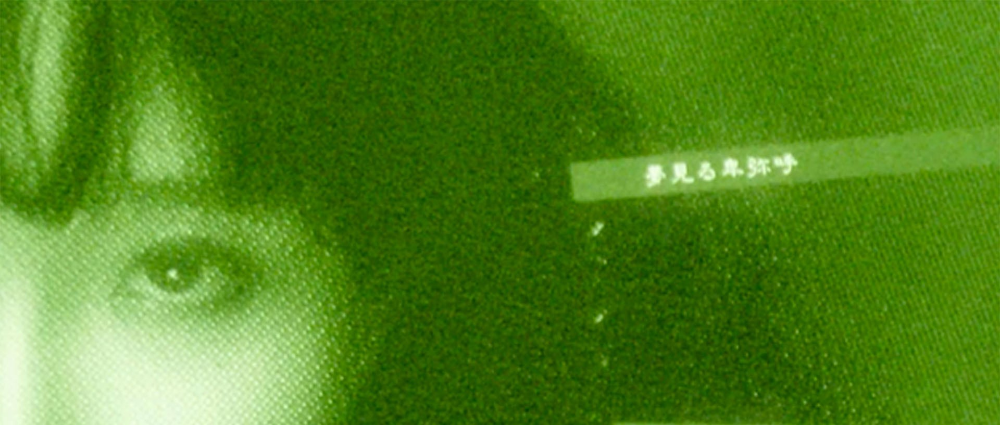
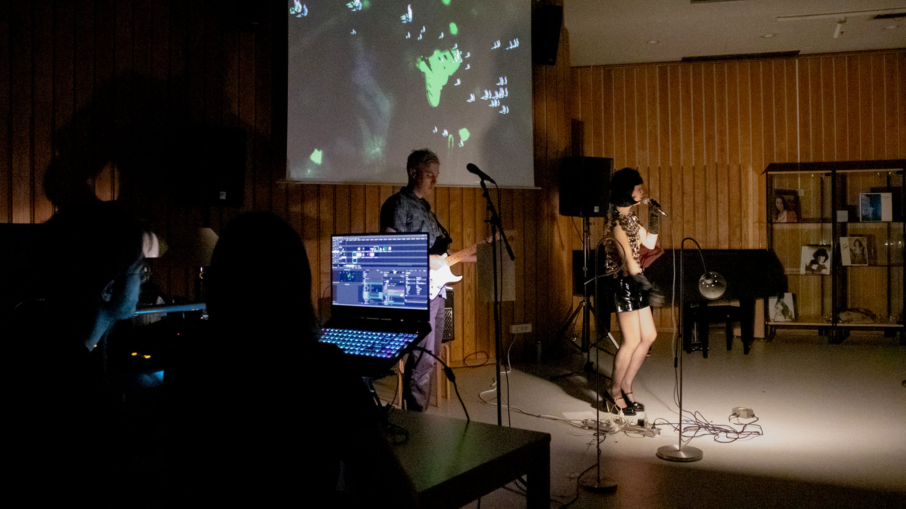

Bulles de Savon - Kumi Solo
Mai 2024
V-Jing en direct pendant le showcase de Kumisolo.
En collaboration avec Diego Poza.
En partenariat avec la Médiathèque Musicale de Paris et la chanteuse Kumisolo.
Reprise et animations de pochettes de vinyles city pop issues des collections de la médiathèque pour illustrer la chanson inédite de Kumi, "Bulles de savon".
Photoshop, After Effects, Resolume.
